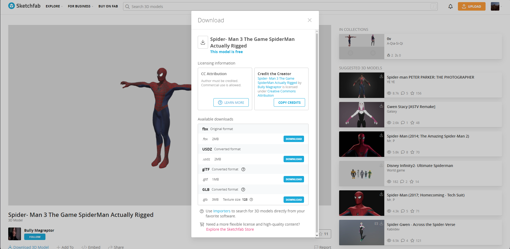
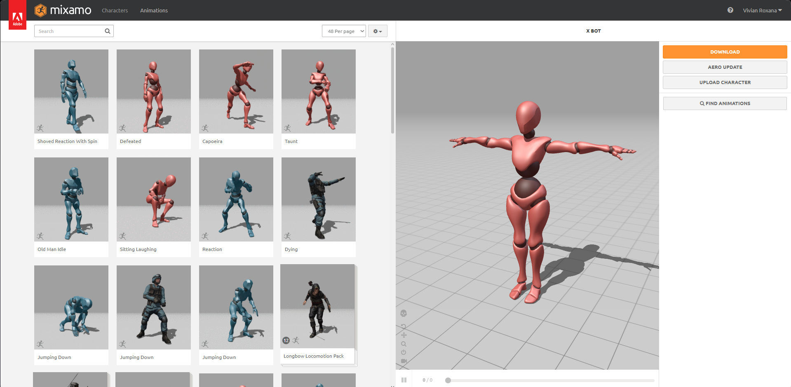
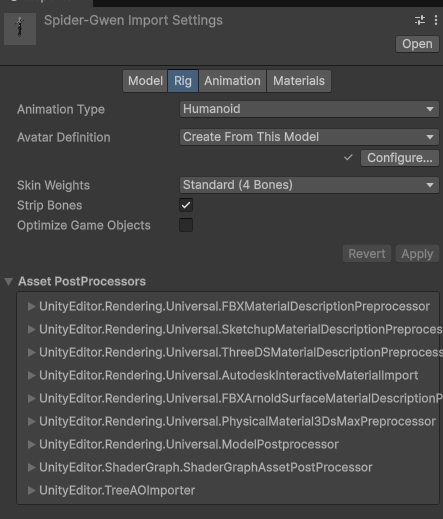
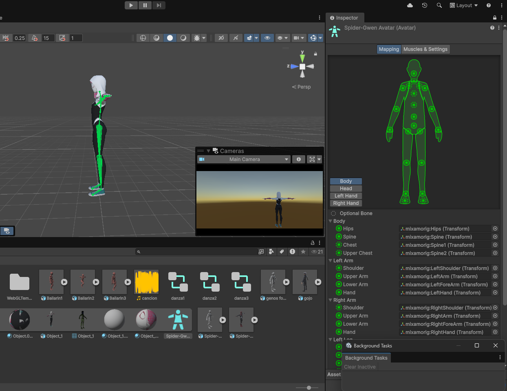
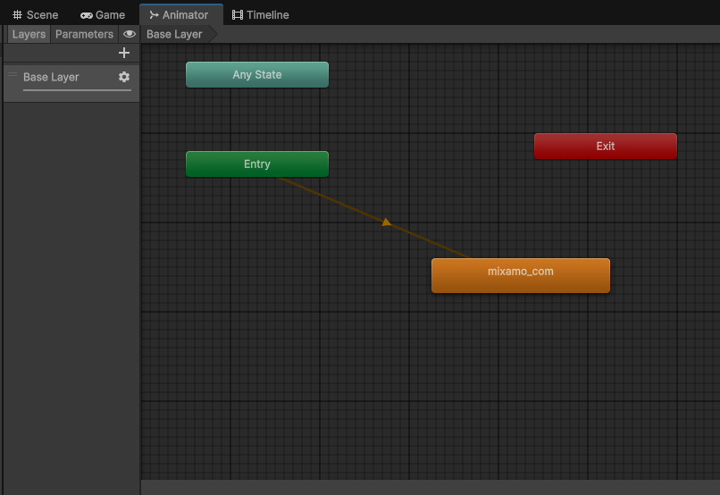
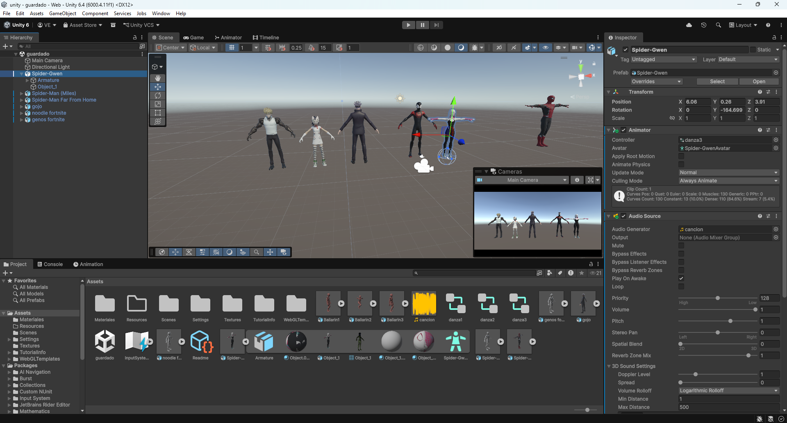

Cronología del desarrollo técnico: Importación de recursos poliédricos externos, auto-rigging, conversión al estándar biomecánico Humanoid, secuenciación en el Animator y programación del controlador de movimiento.

Recursos: grupal_assets_import.pngFase inicial del proyecto. Selección y descarga de un par de personajes tridimensionales optimizados desde repositorios web especializados. Los archivos se estructuran ordenadamente en la carpeta Assets de Unity, mapeando texturas, materiales y mallas poligonales iniciales de forma correcta.

Mixamo: grupal_mixamo_rig.pngCarga de los personajes en la plataforma Adobe Mixamo para el procesamiento de la estructura ósea virtual. Se posicionaron los marcadores anatómicos clave (mentón, muñecas, codos, rodillas e ingle) para calcular el pesado de vértices automático y exportar las animaciones cíclicas de locomoción (Idle, Walk, Run).

Rigging: grupal_humanoid_config.pngSelección del Rig en el inspector de Unity y cambio del tipo de animación a Humanoid. Este paso crítico le indica al motor de renderizado que el esqueleto posee una topología anatómica humana compatible con el sistema de retargeting universal de Unity.

Esqueleto: grupal_skeleton_review.pngApertura de la herramienta Configure Avatar para auditar visualmente los nodos del esqueleto. Se verifica que cada hueso virtual (fémur, columna, extremidades, articulaciones) esté correctamente enlazado con los nodos del modelo para evitar deformaciones asimétricas de la malla durante la ejecución.

Máquina de Estados: grupal_animator_controller.pngCreación del Animator Controller y asignación a los personajes. Se estructuró tres Animator Controller para tres diferentes tipos de baile, que fueron asociados en pares de personajes.

Programación: grupal_movement_controller.pngSe crea un nuevo componente en el elemento de nuestra escena indicando Animator > Animator Controller y arrastrando el personaje junto con el controlador del baile elegido.